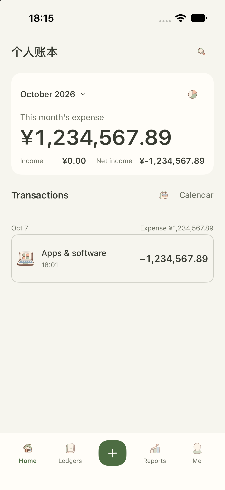
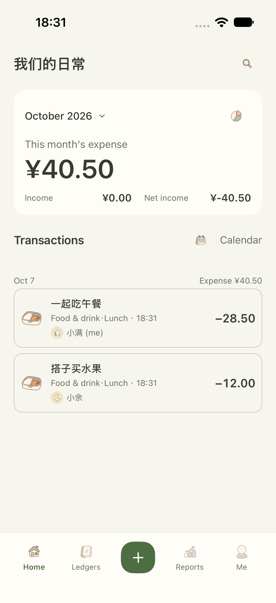

Free
¥0
Daily entries, ledgers, categories, reports and budgets. Import and restore are free.
SHIYU LEDGER · A QUIETER EVERYDAY
Lunch with family. The weekly groceries. All the little things that make a life. Keep a simple record, and make room for what matters.
Made for iPhone and iPad · Coming to the App Store

Open your ledger, without the interruptions.
No account to create. Just start recording.
Record offline. Turn on cloud sync if you choose.
FOR EVERYDAY LIFE
From personal habits to shared household spending. Categories, tags, budgets and reports keep every entry in its place.

Create a family ledger and invite the people you share life with. Groceries, trips and little additions to your home, all in one place.
Extract text with on-device OCR, or choose an optional Doubao AI shortcut. Less typing, more time for your day.

A GLANCE IS ENOUGH
Quickly add an entry, check your spending or see your budget. Put the details you need on your Home and Lock Screens.


SMALL DETAILS, EVERY DAY
Switch between Simplified Chinese and English in app settings. English uses three-digit grouping, such as ¥1,234,567.89. Your ledger names, notes and saved amounts stay unchanged. Currency remains CNY.
SIMPLE, BY CHOICE
Start with the essentials, then choose what works for you. The app offers optional in-app purchases.
Try Pro free for 7 days. No charge or automatic subscription when the trial ends.
Daily entries, ledgers, categories, reports and budgets. Import and restore are free.
Personal iCloud, family ledgers, recognition, export and app lock. Renews annually after you choose to buy.
One purchase for Pro. No renewal.
Prices shown are in CNY for mainland China. The App Store confirmation screen shows the actual price and available products. The 7-day trial is available once per App Store account. Your ledgers and history remain when access expires. Read purchase terms →
GOOD TO KNOW
Yes. Basic bookkeeping works offline without a Shiyu account. Optional personal sync and shared ledgers require iCloud sign-in on your device.
Basic data stays on your device. Optional sync and sharing use Apple CloudKit. The Doubao shortcut sends relevant content to Doubao only when you authorize and run it. See our Privacy Policy.
No. The independent 7-day trial does not charge or turn into a subscription. Annual renewal starts only if you choose to buy Annual Pro. Lifetime Pro is a one-time purchase.
Email 906626481@qq.com with the app version, iOS version and steps to reproduce the issue. Please do not send passwords, verification codes or unnecessary personal information.